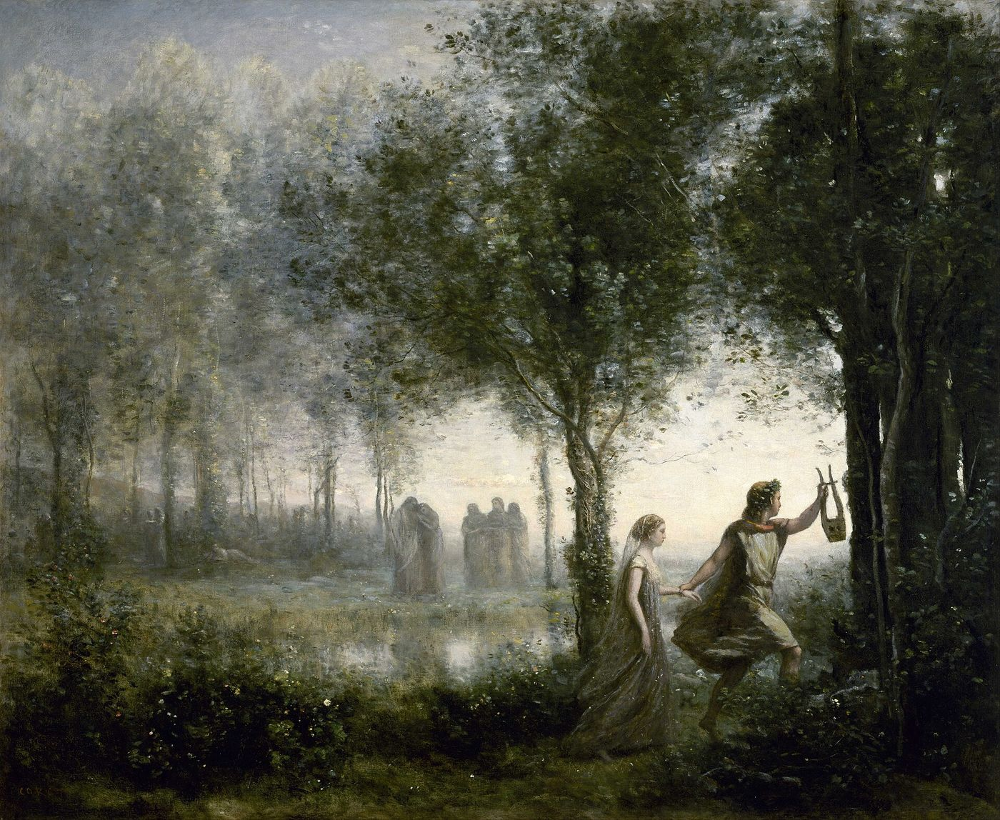

I
Ayrılıklar her zaman acı verir. Ama bir ayrılık söylendiğinde, en acımasız biçimde bile söylendiğinde, bir şey olur: Bir son konur. “Artık seninle olmak istemiyorum” cümlesi, yıkıcı olabilir; ama bir cümledir. Bir başlangıcı, bir ortası ve bir sonu olan bir hikâyeye bir son nokta koyar. Ayrılan kişi, bu cümleye öfkelenebilir, onu yanlış bulabilir, ona itiraz edebilir; ama onu bir yere koyabilir.
Ghosting’de bu cümle yoktur. Hikâye bir son noktayla değil, bir boşlukla biter. Ve insan, bir boşlukla karşılaştığında, onu doldurmadan duramaz. Yanıtsız kalan mesajlar, sessizlik, okundu işareti ama yanıt yok, bir anlam beklentisi yaratır ve bu beklenti, karşıdan bir şey gelmedikçe, içeriden doldurulur. Ne yaptım? Ne söyledim? Bir şeyi yanlış mı anladım? Başka biri mi var? Hiç değer vermemiş miydi? Her soru, bir öncekini doğurur, ve hiçbiri bir yanıta ulaşmaz.
II
Lacan, insanın Başka’yla ilişkisinin merkezine bir soru yerleştirdi: Benden ne istiyor? Lacan bu soruyu, 1960’ta yazdığı bir metinde, Fransız yazar Jacques Cazotte’un 1772 tarihli romanı Le Diable amoureux’den, Âşık Şeytan’dan aldığı bir cümleyle, İtalyanca olarak yazdı: Che vuoi? Ne istiyorsun?1 Lacan’a göre insan arzusu, her zaman Başka’nın arzusuna bağlıdır: Kim olduğumuzu, ne değer taşıdığımızı, büyük ölçüde başkalarının bizden ne istediğini anlamaya çalışarak öğreniriz. Başka’nın arzusu, bu yüzden, bir bilmecedir, ve bu bilmece kaygının kaynağıdır.
Ghosting, bu bilmeceyi en saf, en çıplak biçimine indirir. Karşınızdaki kişi artık hiçbir şey söylemez; arzusu, tamamen okunamaz hale gelmiştir. Normal bir ilişkide, öbürünün arzusu, belirsiz de olsa, sözlerle, davranışlarla, işaretlerle kendini gösterir; biz de onu yorumlar, ona yanıt veririz. Sessizlikte ise yorumlayacak bir şey kalmaz, ve bilmece, kendi içimizdeki en eski sorulara geri döner: Sevilmeye değer miyim? Beni bırakan herkes beni haklı olarak mı bırakıyor? Ghosting’in açtığı yaranın derinliği, çoğu zaman, o ilişkinin kendisinden değil, bu eski sorulardan gelir.
III
Freud, 1917’de yayımlanan “Yas ve Melankoli” yazısında, bir kaybın iki farklı biçimde yaşanabileceğini gösterdi. Yasta, insan kaybettiği kişiyi bilir; acı çeker, ama yavaş yavaş, anıları tek tek gözden geçirerek, kayıp nesneye bağlı enerjisini geri çeker ve yeni bağlara açılır. Melankolide ise durum farklıdır. Freud’un çarpıcı bir gözlemine göre, melankolik kişi kimi kaybettiğini bilse bile, onda neyi kaybettiğini bilmez.2 Kayıp bilinçdışında kalır ve öfke, kaybedilen kişiye değil, kişinin kendisine yönelir: Melankolik, kendini değersiz, suçlu, sevilmeye layık olmayan biri olarak görür.
Ghosting, insanı bu iki durum arasında bir yere bırakır. Kişiyi kaybettiğinizi bilirsiniz; ama ne kaybettiğinizi, neden kaybettiğinizi bilemezsiniz. Bir açıklama olmadığı için, yas işi başlayamaz: Hikâyenin sonu yazılmadan, anıları gözden geçirip yerlerine koymak zordur. Ve açıklamanın boşluğunu, çoğu zaman, kişinin kendisine yönelttiği suçlamalar doldurur. Ghosting sonrası en sık duyulan cümleler, melankolinin cümleleridir: Bende bir sorun olmalı. Hep böyle oluyor. Kimse kalmıyor. Bu cümleler, gidenin sessizliğine verilmiş, kişinin kendisine karşı kurduğu yanıtlardır.
IV
Yunan mitolojisinde ozan Orfeus, karısı Eurydike yılan sokması sonucu öldüğünde, onu geri getirmek için yeraltı dünyasına iner. Şarkısıyla ölüler diyarının tanrılarını öyle etkiler ki, Hades ve Persephone ona Eurydike’yi geri vermeyi kabul eder, tek bir koşulla: Yeryüzüne çıkana kadar arkasına bakmayacaktır. Orfeus önde, Eurydike arkada, karanlık yollardan yukarı tırmanırlar. Ama çıkışa çok yakın bir yerde Orfeus dayanamaz ve arkasına bakar. Eurydike, ikinci kez, bu sefer sonsuza dek, kaybolur.
Mit, ghosting’den sonra yaşanan şeyi şaşırtıcı bir kesinlikle anlatır. Kaybolan kişiye bakmak, ona son bir kez ulaşmak, bir açıklama koparmak için duyulan dayanılmaz istek, çoğu zaman kaybı derinleştirir. Bir mesaj daha gönderilir, sosyal medya hesapları gözden geçirilir, ortak arkadaşlara sorular sorulur. Her bakış, Orfeus’un bakışı gibi, kaybolan kişiyi biraz daha uzağa iter, ya da daha doğrusu, onun gerçekten gittiğini bir kez daha gösterir. Orfeus’un trajedisi, sevdiğini kaybetmesi değil, onun gitmesine izin verememesidir.
Dijital iletişim bu deneyime yeni bir katman ekledi. “Görüldü” işareti, çevrimiçi durumu, bir hikâyeye bakılmış olması, karşıdaki kişinin hâlâ orada olduğunu, ama size yanıt vermediğini gösterir. Bu, bakışın en acı biçimidir: Öbürünün sizi gördüğünü bilir, ama onun sizi nereden, nasıl gördüğünü bilemezsiniz. Lacan’ın bakış üzerine söylediği bir cümle, burada yeni bir anlam kazanır: Sen beni baktığım yerden görmüyorsun.3 Ekranda görünen işaret, bakışı değil, yalnızca onun izini taşır.
V
Ghosting’i yapanlar için de bir şey söylemek gerekir, çünkü onlar da çoğu zaman bir acının içindedir. Bir ilişkiyi sözle bitirmek, bir edimdir: Öbürünün tepkisiyle, öfkesiyle, gözyaşıyla, kendi suçluluğuyla yüz yüze gelmeyi gerektirir. Sessizce kaybolan kişi, çoğu zaman, bu yüzleşmeden kaçar. Bazen bu kaçış bir bencillik, bir umursamazlıktır. Ama bazen, öbürünün acısına tanık olmaya dayanamamanın, bir ayrılığın sorumluluğunu taşıyamamanın, hatta kendisinin de bir zamanlar sessizce bırakılmış olmanın tekrarıdır. Sürekli olarak ilişkilerden sessizce kaybolan biri, bunun neden kendisi için başka türlü mümkün olmadığını sormalıdır.
VI
Ghosting’den sonra iyileşmek, gidenden bir açıklama almakla değil, açıklamanın gelmeyeceğini kabul etmekle başlar. Bu kabul, en zor olanıdır, çünkü açıklama, insanın kendi değerini yeniden kurabileceği tek yer gibi görünür. Ama gidenin sessizliği, çoğu zaman, sizinle değil onunla ilgili bir şeydir: onun bir sözü söyleyemeyişi, bir yüzleşmeye dayanamayışı. Sessizliği bir yargı olarak, sizin değersizliğinize dair bir hüküm olarak okumak, ona hak etmediği bir otorite vermektir.
Bazı küçük adımlar yardımcı olabilir. Gidenle ilgili düşüncelerin ne zaman yoğunlaştığına, hangi anlarda dayanılmaz olduğuna dikkat etmek. Söylenmemiş vedayı, gönderilmeyecek bir mektup olarak yazmak: Kayıp, ancak söze döküldüğünde bir yas haline gelebilir. Ve en önemlisi, bu deneyimin kendi hayatınızdaki başka kayıplarla, başka sessizliklerle, çocuklukta yaşanmış bir yokluğun, bir bekleyişin, bir yanıtsız kalmanın izleriyle bağlantısını sormak. Ghosting’in bu kadar acı vermesi, çoğu zaman, eski bir yaranın yeniden açılmasındandır.
Bu acı haftalar, aylar boyunca sürüyorsa, uykuyu, iştahı, işi, başka ilişkileri etkiliyorsa, ya da her yeni ilişkide aynı biçimde tekrarlanıyorsa, bunu yalnız taşımaya çalışmak yerine bir uzmanla konuşmak gerekir. Psikanalitik çalışmanın bu noktada sunduğu şey, sessizliğin karşısında söz alabileceğiniz bir yerdir: gidenin söylemediğini değil, sizin kendi hikâyenizde henüz söylenmemiş olanı söyleyebileceğiniz bir yer.
Notlar
- J. Lacan, “Subversion du sujet et dialectique du désir dans l’inconscient freudien” (1960), Écrits, Paris: Seuil, 1966. Lacan arzu grafiğinin üst katında yer alan bu soruyu, Cazotte’un romanında şeytanın, çağrıldığında beliren korkunç bir başla sorduğu soruya bağlar. ↩︎
- S. Freud, “Trauer und Melancholie” (1917), Internationale Zeitschrift für ärztliche Psychoanalyse, 4. ↩︎
- Lacan’ın bu formülü ve bakışın yapısı üzerine bu sitedeki “Bakışın Nesnesi: Lacan, Foucault ve Las Meninas” denemesine bakılabilir. ↩︎
Kaynakça
- Cazotte, J. (1772). Le Diable amoureux. Paris.
- Freud, S. (1917). Trauer und Melancholie. Internationale Zeitschrift für ärztliche Psychoanalyse, 4.
- Lacan, J. (1966). Subversion du sujet et dialectique du désir dans l’inconscient freudien. Écrits içinde. Paris: Seuil.
- Ovidius. Metamorphoses, X. kitap.